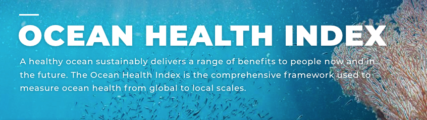
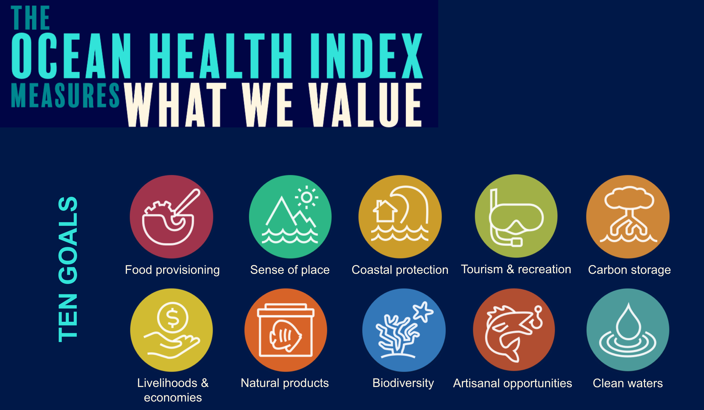
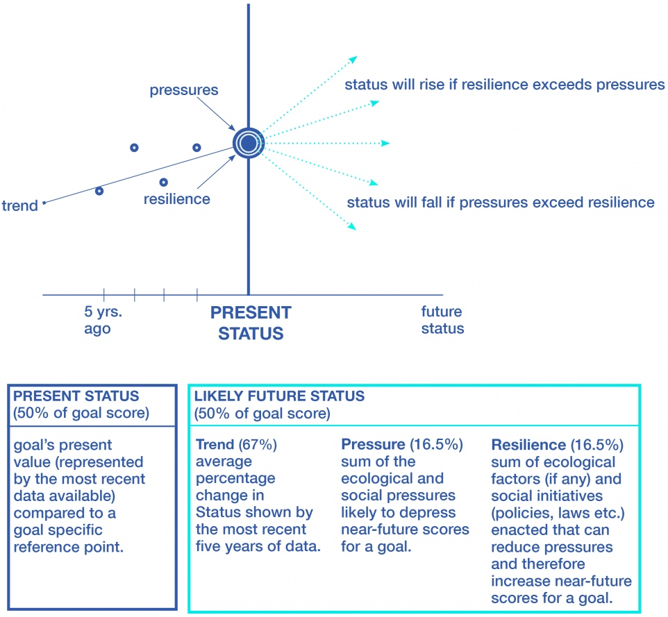

What is the Ocean Health Index (OHI)?
The Ocean Health Index is a framework we developed to assess ocean health, which we define as how well we are managing ocean resources to sustainably deliver benefits to people now and in the future.
Since it’s inception in 2012, we have conducted 12 global assessments and over 30 regional assessments have been conducted (either independently, or in partnership us).
Why OHI?
Note
The Ocean Health Index focuses on what people actually care about, such as jobs and food!
Many indices of ocean health focus on abstract stressor variables, such as phosphate levels, sedimentation, pH, etc. Individual indicators are very important, but they provide limited information when it comes to evaluating how well an overall ecosystem is functioning. Plus, they can be difficult to communicate because most people do not directly care about nutrient pollution, however, they do care about its effects on the ocean’s ability to provide recreation and food.
Note
The OHI recognizes people are an important part of the marine system.
The OHI tracks both the pressures we put on oceans as well as the benefits we receive. Both conservation and extractive use of ocean resources are valued, and consequently, scores are highest when we maximize the benefits we receive while maintaining sustainability. Many indices focus only on the pressures that humans apply to systems, which makes sense because we want to be sure to adequately protect the ocean. However, eliminating all pressures on the ocean would require eliminating all contact between humans and the ocean. Beyond being unrealistic, this is undesirable because we would stop receiving all the benefits that we rely on from the ocean.
What is a goal?
Scientists, economists, and sociologists reviewed what people want and expect from the ocean and then grouped them into ten categories called ‘goals.’

More about each of the goals (click to expand)
Clicking on the goal will link to the goal pages which provide more information about goals.
Each goal is scored on the delivery of specific benefits with respect to a sustainable target. A goal is given a score of 100 if its benefits are maximized without compromising the ocean’s ability to deliver those benefits in the future. Lower scores indicate that more benefits could be gained or that current methods are harming the delivery of future benefits.
How are OHI scores calculated?
Goal scores are the building blocks of the OHI score!
To obtain the overall OHI score for each region, the scores of the ten goals are averaged. The global assessment weights the goal scores equally, but some assessments may place different values on the goals, and thus, weight the goals differently.
Goal scores are based on several components: current status, likely future status, trend, pressures, and resilience.
Current status A goal’s current value compared to its reference point, resulting in a score from 0 to 100.
Likely future status The goal’s predicted status score five years in the future (once again on a scale of 0 to 100), which is estimated by adjusting the current status score by three variables:
Trend observed change in goal’s status during most recent 5 years.
Pressures ecological and social factors that decrease a goal’s status.
Resilience ecological factors and social initiatives (policies, laws, etc.) that mitigate the pressures acting on a goal.
 Once each region has a goal and index score, these can be averaged (weighted by EEZ area) to obtain an overall score for the entire area of interest.
Why do an independent assessment?
OHI+ assessments are conducted by independent groups to measure ocean health in their regions, countries, states, and communities. These assessments can be used by managers to incorporate local information and priorities at the spatial scale where policy and management decisions are made.
Independent assessments use the same framework as the global assessment, but can explore the variables influencing ocean health at the smaller scales where policy and management decisions are made. Goal models and targets are created using higher resolution data, indicators, and priorities, which produce scores better reflecting local realities. This enables scientists, managers, policy makers, and the public to better and more holistically understand, track, and communicate the status of local marine ecosystems, and to design strategic management actions to improve overall ocean health.
Assessments provide an opportunity engage multiple stakeholders in a collaborative process. In our experiences engaging with various countries around the world, the process of conducting the assessment was just as valuable (if not more) than the final results. This is because the assessment process serves as a forum to engage stakeholders from multiple backgrounds (scientific, civil society, government, private sector, NGOs, etc.) to discuss local preferences and priorities, understand the interactions between various activities, and collaboratively establish management targets.
Conducting a local OHI+ assessment is also valuable because it results in a synthesized collection of data and scientific findings.